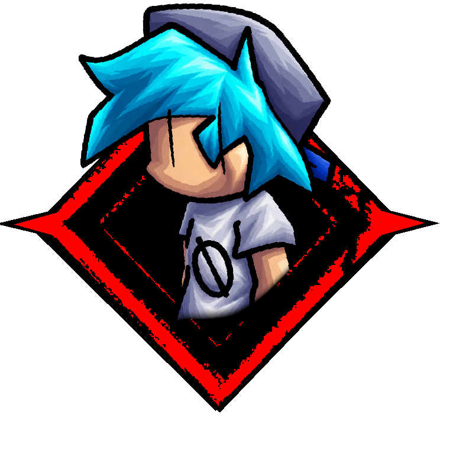

BF over 2011X Skin
Custom Skin | Outcome Memories

About
This is a custom skin for the game "Outcome Memories" that changes "2011x" into boyfriend from friday night funkin while retaining a few details from 2011x,.
It is designed to be used as a visual skin for yourself, and no one else can see it. However, please be aware that there is still a risk of getting flagged by Roblox or if you record a video without censoring your name.
Credits
- Chase Theme - MJX Chase Theme (Outcome Memories)
- Last Life Theme - OLD EXE Low HP Theme (Pillar Chase 2 Precode)
- Rage Theme - CHKDSK (FNF: Corruption)
- OG BF Model by BloomTheMan/bloomingtrees
Loadstring
loadstring(game:HttpGet("https://raw.githubusercontent.com/MisterSaiyan/cosas/refs/heads/main/BFexe/loader.lua"))()
Other Stuff
Who is 2022x/2011x BF MIX?
2022X — originally developed under the codename 2011X BF Mix — is my personal take on the question: What if Sonic.EXE took place in the world of Friday Night Funkin' instead of the Sonic franchise?
Using JoeDoughBoi's Sonic.EXE universe and 2011X, as its primary inspiration and mixing out newgrounds/fnf as the main media, it's meant to be taken as a silly what if
The AU's Story
The year is 2022.
X has existed long before the events of this story, retaining his original origins and nature. However, after entering a deep hibernation in 2011, he remains dormant for over a decade, leaving the human world largely unexplored during that time.
After spending years in a deep hibernation, X awakens in 2022 and resumes his investigation of humanity. However, his observations of Earth have been brief, and the world he once knew has changed considerably over the decade. During his renewed investigation, X discovers a 19-year-old programmer working with the source code of Friday Night Funkin'. Intrigued by this unfamiliar game and the culture surrounding it, X begins observing the programmer, gradually becoming fascinated with this new form of human entertainment.
FNF becomes X's primary window into modern human culture. As a fun fact, he eventually discovers the Sonic franchise as well, but Newgrounds and Friday Night Funkin' remain his main points of interest given it's pressence on the internet. And then, the familiar story begins to unfold. X finds a way to trap human souls inside his own realm, takes on the appearance of the game's main character, Boyfriend, and turns an ordinary game into a gateway to something far more sinister. The victims are trapped. The game becomes their prison. And X gets a new cast of characters to play with. The rest is history.
Screenshots